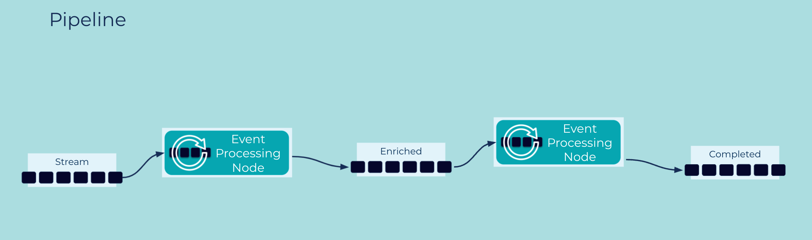

Pipeline
A single Event Stream or Table can be used by multiple Event Processing Applications, and its Events may go through multiple processing stages along the way (e.g., filters, transformations, joins, aggregations) to implement more complex use cases.
Problem
How can a single processing objective for a set of Event Streams and/or Tables be achieved through a series of independent processing stages?
Solution

We can compose Event Streams and Tables in an Event Streaming Platform via an Event Processing Application to a create a pipeline—also called a topology—of Event Processors, which continuously process the events flowing through them. Here, the output of one processor is the input for one or more downstream processors. Pipelines, notably when created for use cases such as Streaming ETL, may include Event Source Connectors and Event Sink Connectors, which continuously import and export data as streams from/to external services and systems, respectively. Connectors are particularly useful for turning data at rest in such systems into data in motion.
Taking a step back, we can see that pipelines in an Event Streaming Platform help companies build a "central nervous system" for data in motion.
Implementation
As an example we can use the streaming database ksqlDB to run a stream of events through a series of processing stages, thus creating a Pipeline that continuously processes data in motion.
CREATE STREAM orders (
customer_id INTEGER, items ARRAY<STRUCT<name VARCHAR, price DOUBLE>>
) WITH (
KAFKA_TOPIC = 'orders', PARTITIONS = 1, VALUE_FORMAT = 'AVRO'
);
We'll also create a (continuously updated) customers table that will contain the latest profile information about each customer, such as their current home address.
CREATE TABLE customers (
customer_id INTEGER PRIMARY KEY, name VARCHAR, ADDRESS VARCHAR
) WITH (
KAFKA_TOPIC = 'customers', PARTITIONS = 1, VALUE_FORMAT = 'AVRO'
);
Next, we create a new stream by joining the orders stream with our customer table:
CREATE STREAM orders_enriched WITH
(KAFKA_TOPIC='orders_enriched', PARTITIONS=1, VALUE_FORMAT='AVRO')
AS SELECT o.customer_id AS cust_id, o.items, c.name, c.address
FROM orders o LEFT JOIN customers c
ON o.customer_id = c.customer_id
EMIT CHANGES;
Next, we create a stream, where we add the order total to each order by aggregating the price of the individual items in the order:
CREATE STREAM orders_with_totals
WITH (KAFKA_TOPIC='orders_totaled', PARTITIONS=1, VALUE_FORMAT='AVRO')
AS SELECT cust_id, items, name, address,
REDUCE(TRANSFORM(items, i=> i->price ), 0e0, (i,x) => (i + x)) AS total
FROM orders_enriched
EMIT CHANGES;
Considerations
- The same event stream or table can participate in multiple pipelines. Because streams and tables are stored durably, applications have a lot of flexibility how and when they process the respective data, and they can do so independently from each other.
- The various processing stages in a pipeline create their own derived streams/tables (such as the
orders_enrichedstream in the ksqlDB example above), which in turn can be used as input for other pipelines and applications. This allows for further and more complex composition and re-use of events throughout an organization.
References
This pattern was influenced by Pipes and Filters in Enterprise Integration Patterns by Gregor Hohpe and Bobby Woolf. However, it is much more powerful and flexible because it is using Event Streams as the pipes.